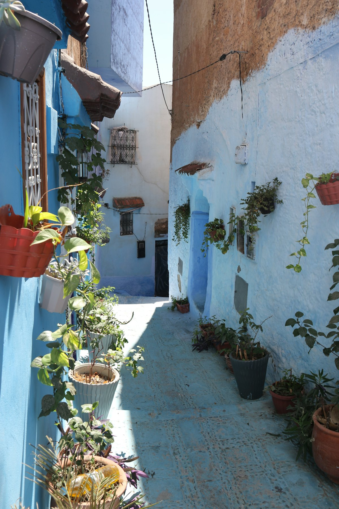
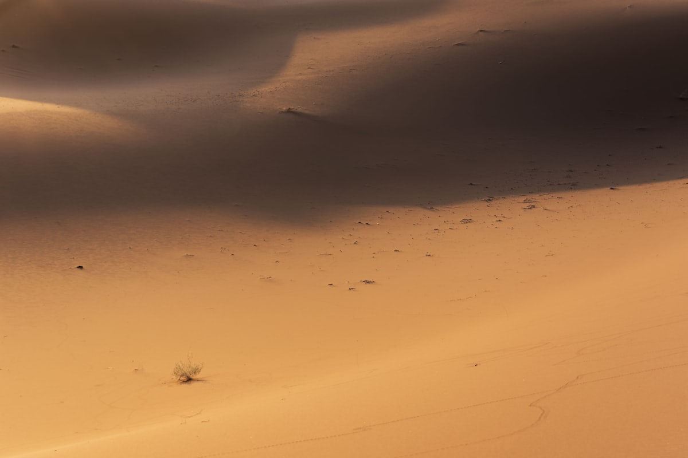
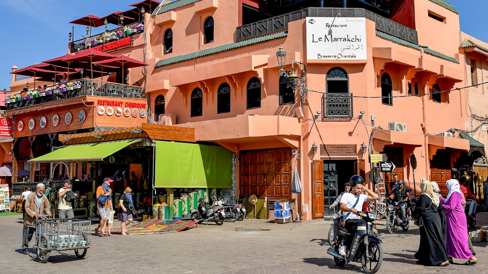
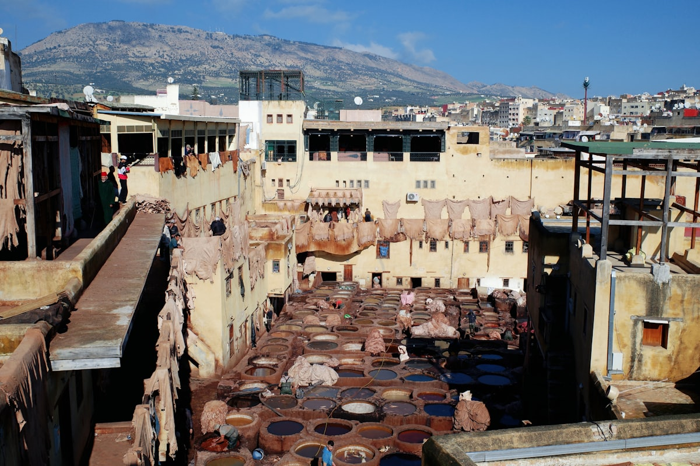
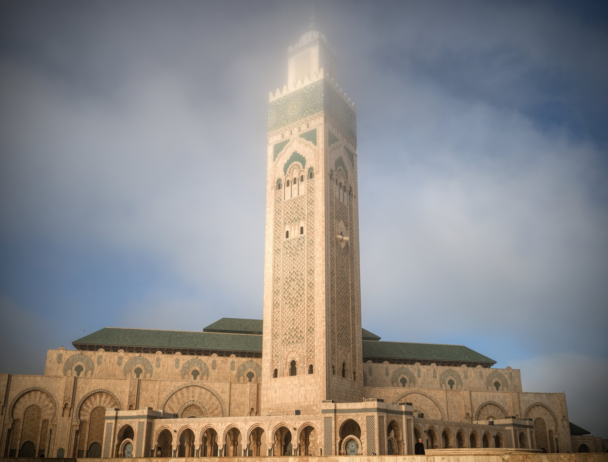
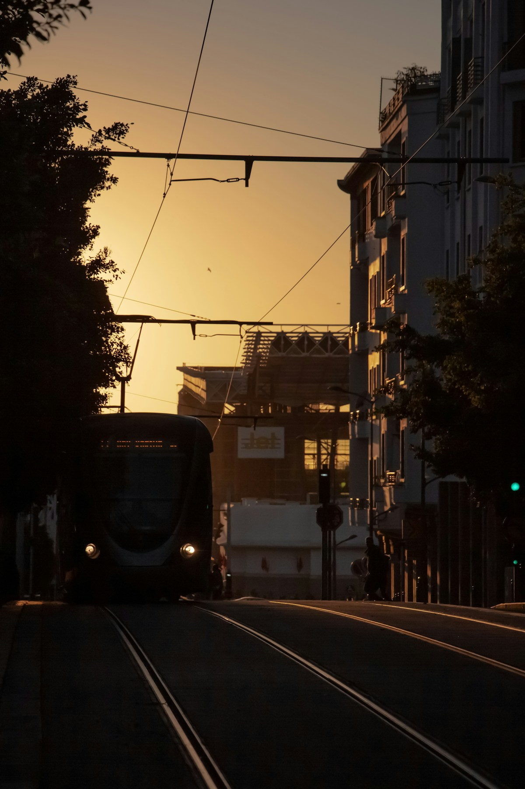
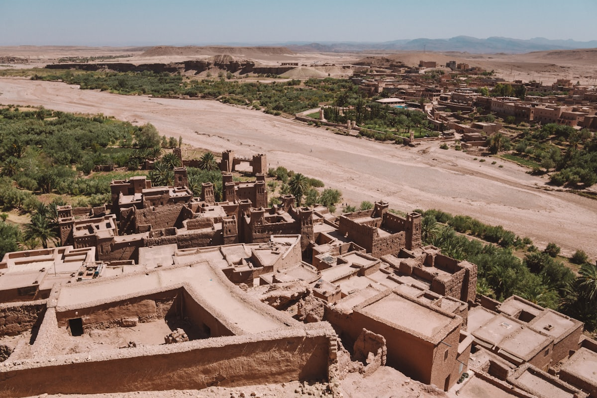
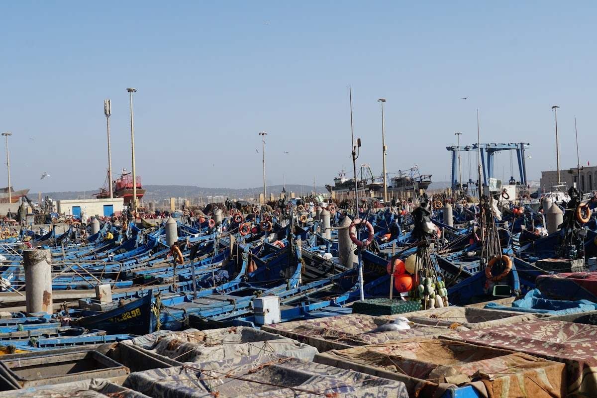

| 事项 | 结论 |
|---|---|
| 事项 | 结论 |
| 签证（最关键） | 中国护照免签 90 天，护照有效期 6 个月以上、往返机票即可，0 费用 0 面签 |
| 推荐方案 | 北线 7 天（卡萨布兰卡→拉巴特→舍夫沙万→菲斯）+ 撒哈拉 2 天 + 马拉喀什 5 天（含索维拉） |
| 返程约束 | 摩航 AT230 每周一/四/六 16:20 从卡萨布兰卡起飞返京，马拉喀什乘高铁约 2.5h 到机场站，务必预留衔接 |
| 行程链 | 卡萨布兰卡 → 拉巴特 → 舍夫沙万 → 菲斯 → 撒哈拉 → 马拉喀什 → 索维拉/返程 |
| 预算（人均） | 经济 15000–22000 ／ 标准 28000–42000 ／ 舒适 55000–80000（人民币） |
| 三件提前事 | ① 订撒哈拉 2–3 日团（拼团 €115–243）② 订 ONCF 火车票（官网提前 30 天）③ 备好迪拉姆现金，小额场景极多 |
| 季节提醒 | 3–5 月与 10–11 月最舒适；6–8 月沙漠与马拉喀什酷热（40℃+）；12–2 月山里冷；斋月（2026 年约 2–3 月）白天餐厅关门，慎选 |
| 支付 | 现金迪拉姆为主（1 元 ≈ 1.4 迪拉姆），大额酒店/高铁可刷卡，市集只收现金 |
以下为 14 天 13 晚的推荐节奏：北线「卡萨布兰卡→拉巴特→舍夫沙万→菲斯」乘火车+CTM 巴士，中段撒哈拉拼团南下，最后以马拉喀什为大本营收尾。每日主景点 ≤2 个。
| 日期 | 行程 | 过夜地 | 主题 |
|---|---|---|---|
| D1 抵达卡萨布兰卡 | 北京✈卡萨布兰卡（直飞约 13–14h），入住市区，滨海大道看日落 | 卡萨布兰卡 | 抵达+预热 |
| D2 | 哈桑二世清真寺（140 迪拉姆）→ 老麦地那 → 里克咖啡馆 → 滨海大道 | 卡萨布兰卡 | 海上清真寺 |
| D3 | 火车约 1h 到拉巴特：哈桑塔 → 乌达雅堡 → 舍拉遗址 | 拉巴特 | 首都一日 |
| D4 | CTM 巴士约 4–5h 到舍夫沙万，下午蓝城老街漫步 | 舍夫沙万 | 进蓝城 |
| D5 | 蓝城全天：山城街巷 → 西班牙清真寺山顶日落（徒步约 1h） | 舍夫沙万 | 蓝色小镇 |
| D6 | CTM 巴士约 4h 到菲斯，下午初探老城：布伊纳尼亚神学院 | 菲斯 | 千年古城 |
| D7 | 菲斯全天：皮革染坊 → 卡拉维因清真寺外观 → 铜器巷 → 制陶坊 | 菲斯 | 手工艺日 |
| D8 | 菲斯→伊芙兰→齐兹峡谷→梅尔祖卡（约 8h），日落骑骆驼进沙漠营地 | 梅尔祖卡 | 进撒哈拉 |
| D9 | 沙丘日出 → 早餐后南行：托德拉峡谷 → 廷吉尔 → 达德斯绿洲 | 达德斯/瓦尔扎扎特 | 峡谷绿洲 |
| D10 | 阿伊特本哈杜村（权游取景地）→ 翻越高阿特拉斯山 → 傍晚抵马拉喀什 | 马拉喀什 | 红城初访 |
| D11 | 马约尔花园（170 迪拉姆）→ YSL 博物馆 → 库图比亚清真寺 → 德吉玛广场夜市 | 马拉喀什 | 红城精华 |
| D12 | 巴伊亚宫 → 本约瑟夫神学院 → 萨阿德陵墓 → 麦地那市集扫货 | 马拉喀什 | 宫殿市集 |
| D13 | 索维拉一日：CTM 约 2.5h → 蓝色渔船海港 → 城墙 → 海滩落日（或红城自由日） | 马拉喀什 | 大西洋风城 |
| D14 返程 | 高铁约 2.5h 到卡萨布兰卡机场站 → 摩航 AT230 16:20 返京，次日 11:55 抵京 | — | 收尾 |
以下为 14 天全程的逐小时执行时间线，可当作「当天打开照着走」的清单。标注 ※ 的可选项视体力与天气取舍。
| 时间 | 事项 |
|---|---|
| 13:55–20:10 | 北京大兴✈卡萨布兰卡（摩洛哥皇家航空 AT231，直飞约 13–14h，每周二/五/日；或经迪拜/伊斯坦布尔转机约 16h） |
| 20:30–22:00 | 入境（免签 90 天，仅需护照+回程机票单），打车到市中心入住，机场到市区约 30–40 分钟 |
| 22:00–23:00 | 滨海大道（Corniche）散步吹海风，附近餐厅吃塔吉锅夜宵 |
| 23:00 | 回酒店休息，倒时差（-8h，当晚容易失眠，忍住别睡太晚） |
| 时间 | 事项 |
|---|---|
| 08:30–10:30 | 哈桑二世清真寺（外国成人 140 迪拉姆，现场购票）：世界第三大清真寺，210 米宣礼塔，1/3 建在大西洋上，非穆斯林须跟导览团进入祈祷大厅 |
| 10:30–12:00 | 清真寺广场 + 滨海步道拍照，屋顶在阳光下呈薄荷绿，远看如海上宫阙 |
| 12:00–14:00 | 午餐：老麦地那附近吃海鲜塔吉锅 + 薄荷茶 |
| 14:30–17:00 | 老麦地那（免费）：与马拉喀什/菲斯不同，卡萨老城紧凑清净，逛香料铺与手工艺店；顺路打卡电影《北非谍影》主题的 Rick's Café（外观） |
| 18:30 | 晚餐：滨海大道烤海鲜，看大西洋日落 |
| 时间 | 事项 |
|---|---|
| 08:00 | 卡萨布兰卡乘 ONCF 火车到拉巴特（约 1h，二等座约 40 迪拉姆） |
| 09:30–11:00 | 哈桑塔与穆罕默德五世陵墓（免费）：未完工的 12 世纪宣礼塔 + 华丽陵墓，近处可看卫兵换岗 |
| 11:00–13:00 | 乌达雅堡 Kasbah des Oudayas（免费）：蓝白海岸堡垒，柏柏尔+安达卢西亚混搭风情，海边看大西洋 |
| 13:00–14:00 | 午餐：乌达雅堡门口俯瞰河口的露天餐厅，吃库斯库斯 |
| 14:30–16:00 | 舍拉遗址 Chellah（约 70 迪拉姆）：罗马古城+中世纪墓地遗址，鹳鸟栖息，游客极少 |
| 16:00 | 逛拉巴特新城，傍晚可选回卡萨布兰卡住宿，或住拉巴特第二天一早北上 |
| 时间 | 事项 |
|---|---|
| 08:00–13:00 | 拉巴特/卡萨布兰卡乘 CTM/Supratours 长途巴士到舍夫沙万（约 4–5h，票价 130–180 迪拉姆，建议提前购票） |
| 13:00–14:00 | 入住蓝城内民宿，放下行李 |
| 14:30–17:30 | 蓝城老街（免费）：从主广场 Plaza Uta el-Hammam 出发，刷成普鲁士蓝/天蓝的窄巷随手都是壁纸，逛到拉夫河畔 |
| 18:00–19:30 | 城堡博物馆广场附近晚餐，烤串+塔吉锅 |
| 20:00 | 夜晚蓝城人少灯暖，山城安静适合拍蓝调照片 |
| 时间 | 事项 |
|---|---|
| 08:00–10:00 | 趁旅行团未到，清晨再走一遍主巷（光线柔和、几乎没人），上 Plaza 高地看蓝城全景 |
| 10:00–12:00 | 拉夫河（Ras el-Maa）山泉边看本地人洗衣，探访传统织布与草药铺 |
| 12:00–14:00 | 午餐：山城特色鸡肉塔吉锅/西班牙式煎蛋饼 |
| 14:00–17:00 | 自由安排：逛独立小店买蓝白陶瓷、手编包（砍价从 3 折起）；或报半天徒步看周边山谷 |
| 17:00–19:00 | 西班牙清真寺山顶看日落：从老城走碎石路上山约 40–50 分钟，日落时蓝城被染成金蓝色，绝美机位 |
| 19:30 | 下山晚餐，宿舍夫沙万 |
| 时间 | 事项 |
|---|---|
| 08:00–12:00 | 舍夫沙万乘 CTM 巴士到菲斯（约 4h，经得土安方向），建议提前一天买票 |
| 12:00–13:30 | 入住麦地那内 Riad（传统庭院酒店），午餐简单吃 |
| 14:00–16:00 | 布伊纳尼亚神学院 Bou Inania Madrasa（约 70 迪拉姆）：14 世纪马林王朝建筑，雪松木雕+瓷砖拼花，是菲斯最美神学院 |
| 16:00–18:00 | 从神学院沿主干道蓝门（Bab Bou Jeloud）方向逛老城，看制革铺、铜器敲打声与毛驴送货 |
| 18:30 | 晚餐：麦地那内庭院餐厅，塔吉锅+蒸蔬菜；宿菲斯 Riad |
| 时间 | 事项 |
|---|---|
| 08:30–10:30 | 皮革染坊 Chouara Tannery：从周边皮具店楼顶俯瞰五色染缸（经典机位，薄荷叶塞鼻），愿意的话可顺路看鞣制工艺 |
| 10:30–12:30 | 卡拉维因大学/清真寺外观（非穆斯林不可入内）→ 走 Al-Attarine 香料街，感受千年古都市井 |
| 12:30–14:00 | 午餐：菲斯名菜 Pastilla（鸽肉/鸡肉千层酥，甜咸交织） |
| 14:00–16:30 | 制陶坊 Pottery Cooperative（城外新城区，打车 10 分钟）：看菲斯蓝陶制作流程，可直购 |
| 16:30–18:00 | 回老城逛铜器巷与 Bab Bou Jeloud 蓝门，买皮革包、尖头拖鞋、阿拉丁灯 |
| 19:00 | 晚餐：老城屋顶餐厅吃库斯库斯，看菲斯麦地那夜景 |
| 时间 | 事项 |
|---|---|
| 08:00 | 乘沙漠团专车（拼团小巴）从菲斯出发，经伊芙兰 Ifrane（摩洛哥「小瑞士」，红顶雪松小镇）停留 |
| 11:00–13:00 | 穿齐兹峡谷 Ziz Valley：棕榈林+峡谷绿洲，途中午餐（团餐自理） |
| 15:30–17:00 | 抵达梅尔祖卡 Merzouga，骑骆驼（约 1h）进入 Erg Chebbi 金色沙丘深处的营地 |
| 17:00–19:00 | 沙丘上等日落：踩着软沙爬上 150 米高沙丘，撒哈拉的橙色黄昏 |
| 19:30–22:00 | 营地篝火+柏柏尔鼓乐，沙漠星空晚餐，宿帐篷（条件有限但浪漫值拉满） |
| 时间 | 事项 |
|---|---|
| 06:00–07:30 | 沙丘日出：提前 20 分钟爬上沙丘，看朝阳把沙脊染成金红色，回营地早餐 |
| 08:30 | 骑骆驼/坐车出沙漠，告别 Erg Chebbi |
| 10:30–12:00 | 廷吉尔 Tinjdad 棕榈林与绿洲小镇短暂停留 |
| 12:00–14:00 | 托德拉峡谷 Todra Gorge：300 米高红崖夹缝中的峡谷，攀岩胜地，午餐峡谷下 |
| 14:30–17:00 | 沿达德斯山谷 Dades Valley公路看「猴子手指」地貌，入住山谷 Kasbah 特色酒店 |
| 18:30 | 晚餐：山谷酒店露台烛光晚餐，看达德斯星空 |
| 时间 | 事项 |
|---|---|
| 08:00–09:30 | 达德斯出发，前往阿伊特本哈杜 Ait Ben Haddou（约 2h 车程） |
| 09:30–11:30 | 阿伊特本哈杜筑垒村（世界遗产，门票约 70 迪拉姆）：《权力的游戏》渊凯城取景地，红土泥堡+背景雪山，走村串巷登顶 |
| 11:30–12:30 | 午餐：村口烤羊肉三明治/塔吉锅 |
| 13:00–16:00 | 翻越提吉恩提什卡山口 Tizi n'Tichka（海拔 2260m）：高阿特拉斯山盘山公路，窗外雪山与柏柏尔村落，中途停车观景 |
| 17:00 | 抵达马拉喀什，入住麦地那旁 Riad，傍晚德吉玛广场初体验（小吃+夜市） |
| 19:00 | 晚餐：广场旁烤羊排/蜗牛汤，宿马拉喀什 |
| 时间 | 事项 |
|---|---|
| 08:30–11:00 | 马约尔花园 Jardin Majorelle（约 170 迪拉姆）+ YSL 博物馆（约 140 迪拉姆，联票约 330）：钴蓝建筑+仙人掌园，圣罗兰故居与灵感地，建议开门就到避开人流 |
| 11:30–13:00 | 库图比亚清真寺外观（非穆斯林不可入内）+ 周边花园与大道 |
| 13:00–14:30 | 午餐：新城法语餐厅或麦地那庭院餐厅 |
| 15:00–17:30 | 回 Riad 午休避暑（夏季 40℃+），或逛皇家曼苏尔酒店周边小众街巷 |
| 17:30–19:00 | 德吉玛广场 Jemaa el-Fnaa白天场：耍蛇、猴戏、手绘汉娜、橙汁摊 |
| 19:00–21:00 | 广场夜晚场：千盏灯+烤串摊+音乐艺人，挑一家屋顶餐厅吃晚餐看全场 |
| 时间 | 事项 |
|---|---|
| 09:00–11:00 | 巴伊亚宫 Bahia Palace（约 70 迪拉姆）：19 世纪宰相府邸，大理石庭院+彩色天窗 |
| 11:00–12:30 | 萨阿德陵墓 Saadian Tombs（约 70 迪拉姆）：16 世纪王朝墓园，雪松雕花天花板 |
| 12:30–13:30 | 午餐：麦地那内 Kebabs/库斯库斯 |
| 14:00–15:30 | 本约瑟夫神学院 Ben Youssef Madrasa（约 50 迪拉姆）：北非最大的古兰经学校，柱廊庭院 |
| 15:30–18:00 | 麦地那市集扫货：马拉喀什 Souk 分行业成巷，皮革、铜器、柏柏尔地毯、精油——砍价从 3 折起步 |
| 19:00 | 晚餐+宿马拉喀什，或去传统 Hammam（公共澡堂）体验，约 150–300 迪拉姆含搓澡 |
| 时间 | 事项 |
|---|---|
| 07:30–10:00 | 马拉喀什乘 CTM 巴士到索维拉（约 2.5h，票价约 75 迪拉姆，建议提前购票） |
| 10:00–12:00 | 老城海港（免费）：蓝色渔船+海鸥+捕鱼港，斯卡拉城墙 Skala de la Ville 上远眺大西洋（登墙约 60 迪拉姆） |
| 12:00–13:30 | 午餐：海港边吃现烤沙丁鱼/烤鱿鱼（索维拉全摩洛哥海鲜最便宜） |
| 13:30–16:00 | 麦地那蓝色小巷闲逛（索维拉也是《权力的游戏》渊凯城拍摄地之一），海滩吹风看风筝冲浪 |
| 16:30–19:00 | 返程 CTM 回马拉喀什（末班车约 18:00，提前确认），晚餐红城收尾 |
| 时间 | 事项 |
|---|---|
| 08:00–10:30 | 马拉喀什乘 ONCF 高铁/火车到卡萨布兰卡机场站 L'Oasis/CMN（约 2.5h，二等座约 100–150 迪拉姆），预留 3h+ 衔接 |
| 10:30–12:30 | 机场免税店补货：摩洛哥精油、藏红花、椰枣、阿甘油 |
| 13:30 | 值机、安检（返程航班摩航 AT230 每周一/四/六 16:20 起飞） |
| 16:20–次日 11:55 | 卡萨布兰卡✈北京大兴，次日中午抵京，回家休整 |
必去（必去）/ 顺路（顺路）/ 可跳过（可跳过）。

必去
必去
必去
必去
顺路
必去
顺路图片为 Unsplash 主题图（舍夫沙万蓝城、撒哈拉沙丘、马拉喀什广场、菲斯老城、哈桑二世清真寺等均为摩洛哥实景），用于页面配图。更多免费看点：库图比亚清真寺外观、拉巴特哈桑塔、马拉喀什德吉玛广场。
点击左侧节点可在地图上定位；点击地图 marker 会高亮对应节点。坐标为 WGS-84 转 GCJ-02 纠偏后标注。
以下为单人、不含购物的估算，人民币计价；出发地基准北京。汇率按 1 元 ≈ 1.4 摩洛哥迪拉姆估算。往返机票按淡季摩航直飞 4500–6500 元计（旺季 7–8 月贵 2000+）。
| 项目 | 经济（15000–22000） | 标准（28000–42000） | 舒适（55000–80000） |
|---|---|---|---|
| 往返机票 | 直飞 4500–5500 | 直飞含转机 6000–7500 | 商务/灵活 12000–18000 |
| 住宿（13 晚） | 民宿/青旅 150–250/晚 | 特色 Riad 350–600/晚 | 奢华 Riad 800–1800/晚 |
| 交通（火车+沙漠团） | 火车巴士 1500–2000 | 含沙漠团 3500–5000 | 包车+高铁+豪华帐篷 8000–12000 |
| 门票 | 基础景点 500–800 | 含马约尔/清真寺 1200–1800 | 全含+私人导览 2500–4000 |
| 餐饮（14 天） | 街头小吃为主 1200–2000 | 正常下馆子 3000–4500 | 庭院餐厅+酒 7000–10000 |
加丹吉尔/艾西拉一日（看直布罗陀海峡、蓝色白色涂鸦小城），或把沙漠团升级为 3 日含瓦尔扎扎特电影城与玫瑰谷；马拉喀什多留 1 天体验 Hammam 与晚间演出。14 天本就充裕，加 3 天适合喜欢慢逛的人。
冬季沙漠营地夜间约 0–5℃，务必带抓绒+羽绒内胆和保暖睡袋；舍夫沙万与阿特拉斯山区偶有降雪，盘山路可能封。好处是游客少、房价低，机票是全年最便宜档（往返可到 4000 元内）。
| 方式 | 时长 | 参考价 | 备注 |
|---|---|---|---|
| 直飞（推荐） | 北京大兴✈卡萨布兰卡约 13–14h | 往返 4500–6500 元 | 摩洛哥皇家航空 AT231/230，波音 787-9，每周 3 班 |
| 转机 | 16–22h | 4000–5500 元 | 经迪拜/伊斯坦布尔/多哈/开罗，班次多但费时 |
| 国际陆路 | — | — | 中国到摩洛哥无陆路，只能飞机 |
| 区域 | 价格/晚 | 优点 | 短板 |
|---|---|---|---|
| 卡萨布兰卡·市中心/滨海 | 经济 150–250 / 标准 300–500 | 近火车站与清真寺，方便中转 | 城市观光属性一般 |
| 舍夫沙万·蓝城内 | 经济 150–250 / 标准 300–550 | 推窗即蓝城，拍照方便 | 上坡石子路拖行李累 |
| 菲斯·麦地那 Riad | 标准 350–600 / 舒适 800–1500 | 传统庭院、正宗摩洛哥体验 | 巷子复杂，易迷路 |
| 梅尔祖卡·沙漠营地 | 标准 250–500（含餐）/ 豪华 600–1000 | 星空+骆驼+篝火 | 条件有限、冬夜冷 |
| 马拉喀什·麦地那/新城 | 经济 180–300 / 标准 400–700 | 离德吉玛广场近，选择多 | 广场周边夜间较吵 |
| 索维拉·海港区 | 标准 300–600 | 风城安静、性价比高 | 冬季海风大 |